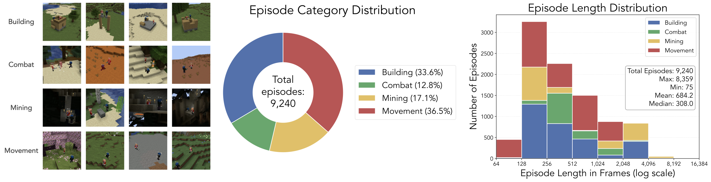
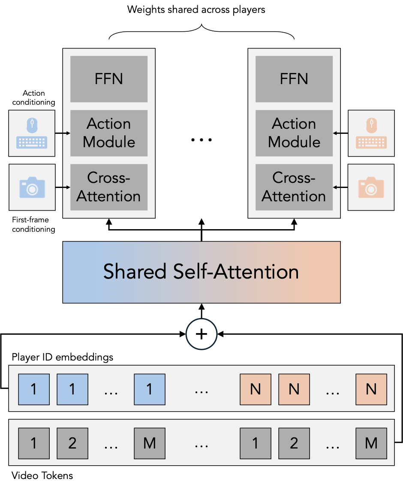
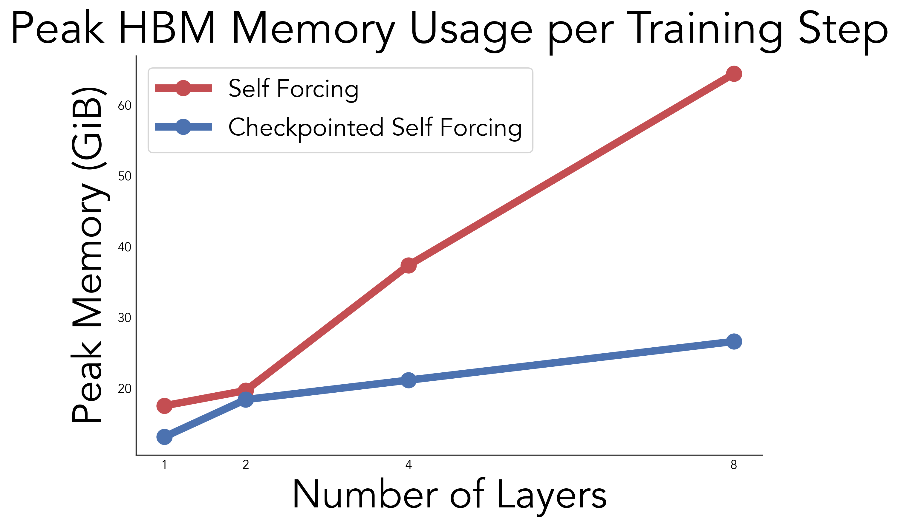

Solaris: Building a Multiplayer Video World Model in Minecraft
Solaris is a multiplayer video world model in Minecraft, which generates consistent first-person observations for two players simultaneously. It is trained on 12.6M frames of coordinated Minecraft gameplay created by SolarisEngine, a scalable framework for producing realistic multiplayer Minecraft gameplay.
Selected samples from Solaris. Each row shows a generated episode: the left and right panels are the first-person views produced by our model for each player, and the center panel is the ground truth third-person view (not given to the model).
Click video to enlarge.
TLDR
Current video world models only handle single-player perspectives, which doesn't reflect how the real world actually works. We built Solaris, the first multiplayer video world model that generates consistent observations across multiple players simultaneously. A core contribution is SolarisEngine, a multiplayer data collection system we designed and built entirely in-house since existing platforms were only ever designed for single-player settings. It supports coordinated multi-agent interaction and synchronized visual capture in games like Minecraft. Using it, we collected 12.6M multiplayer frames and created evaluation benchmarks for multiplayer movement, grounding, memory, building, and consistency. Training-wise, we use a staged pipeline that progressively goes from single-player to multiplayer modeling, combining bidirectional, causal, and Self Forcing training objectives. We also introduce Checkpointed Self Forcing, a memory-efficient Self Forcing variant for scalable long-horizon teacher guidance. We're open-sourcing everything.
Figure 1: Sample episodes from our multiplayer dataset collected with SolarisEngine. Each column shows a different task type (building, bridging, PvP, PvE, chasing, exploration, mining, and collecting), with three episodes per task. The third-person view shown here is for visualization only; SolarisEngine renders first-person observations and actions, which is what our model is trained on.
Several frameworks exist for controlling agents in Minecraft, including Malmo, MineRL, MineDojo, and Mineflayer. While these tools each offer useful capabilities, none of them were designed with multiplayer data collection in mind. Frameworks like MineRL and MineDojo use low-level action spaces where agents can only take random actions, producing chaotic gameplay that is unusable for world modeling. This problem only gets worse with multiple agents acting randomly at the same time. Mineflayer provides high-level primitives like pathfinding and block placement, but it was never built for coordinated multi-agent interaction. There was simply no existing system we could use off the shelf for collecting realistic multiplayer gameplay data, so we built one from scratch.
Cooperative Multiplayer Gameplay
We chose Mineflayer as our foundation because it provides composable primitives for things like pathfinding, block placement, and combat. On top of this, we built a communication layer that lets bots coordinate with each other during episodes. We also introduced higher-level primitives for building, scaffolding, tool use, and navigation. When combined, these form complete episodes where two bots work together toward a predefined goal. We built a library of episode types covering core aspects of Minecraft interaction: building houses and bridges, PvP and PvE combat, chasing and exploration, and mining (Figure 1). Although the episode logic is written using these high-level primitives, the system translates everything down to a low-level action space compatible with VPT, a single-player Minecraft dataset collected from human players.
Extracting and Aligning Visuals with Actions
Mineflayer controls a character but cannot render graphics. To get visual observations, we pair each controller bot with a camera bot running the official Minecraft Java client in headless mode. A custom server-side plugin synchronizes the camera to mirror the controller's position, orientation, and even animations in real time. Although they run as separate processes, the controller and camera together form a single logical player. Actions and visual observations are aligned in post-processing using timestamps at a shared 20 FPS frame rate. The overall architecture is shown in Figure 2.
Figure 2: SolarisEngine Overview. Our system orchestrates camera and controller bots that work together to coordinate gameplay behavior and collect aligned actions and observations.
Scalable Data Collection
We package the controller bots, camera bots, and Minecraft server as Docker containers orchestrated through Docker Compose. A suite of Python scripts manages these units, launching multiple workers in parallel for scalable collection. The bots run in a loop, sampling and executing episodes from our library, teleporting to a random location at the start of each episode to diversify terrain. Since Minecraft is complex and stochastic, episodes inevitably encounter errors or get stuck. We built a safety mechanism that detects failures during execution, notifies all components, and aborts the current episode. The system then proceeds with a fresh state, enabling continuous data collection without manual intervention.
Training Dataset
Using SolarisEngine, we collected a multiplayer Minecraft training dataset totaling 9,240 episodes and 6.32M frames per player (12.64M combined). The episodes fall into four broad categories: building (houses, walls, towers, bridges), combat (PvP and PvE), movement (chasing, navigation, exploration), and mining. We split episodes evenly between Superflat and Normal world types, and vary times of day, biomes, and weather to maximize visual diversity. Episode lengths range from 128 to 512 frames (6.4 to 25.6 seconds at 20 fps), with episode types sampled randomly using weights that decrease with typical episode length to keep the distribution balanced. All actions are annotated as semantic game events in the format compatible with VPT, covering movement, camera, and interactive inputs like digging, placing, and attacking. To our knowledge, this is the first action-annotated multiplayer Minecraft dataset suitable for training world models. Figure 3 shows the full dataset breakdown.

Figure 3: Dataset statistics. (Left) Our dataset consists of four episode categories focusing on building, combat, movement, and mining. (Middle) Episode type distribution across 9,240 total episodes and 6.32M frames per player. (Right) Episode length distribution, with most episodes between 128 and 512 frames.
Solaris Solaris is a controllable video diffusion model that jointly predicts future observations for multiple players, conditioned on their past observations and actions. We train it using flow matching combined with diffusion forcing, where independent noise levels are sampled per player and per timestep. This lets the model learn to denoise each player's observation stream while staying consistent across players.
We build on MatrixGame 2.0, a single-player video Diffusion Transformer (DiT) trained on multiple video games including Minecraft. We initialize from their pretrained checkpoint and frozen VAE, then make three key modifications to support multiplayer. First, we expand the action space to cover the full range of Minecraft inputs from VPT, increasing the input dimension of the action conditioning module. Second, we introduce multiplayer self-attention layers where tokens from all players are concatenated and attend to each other, allowing information exchange between players within each DiT block (Figure 4). We apply 3D rotary position embeddings independently per player and add learned player ID embeddings so the model can distinguish between them. Third, all other modules (cross-attention for first-frame conditioning, feed-forward layers, action conditioning) remain unchanged from MatrixGame 2.0 and are applied independently per player. While we currently train with two players, the architecture generalizes to any number.

Figure 4: Our modified DiT block achieves multiplayer modeling through visual interleaving along the sequence dimension. Multiplayer information is exchanged through a shared self-attention block. Other modules are unchanged from MatrixGame 2.0 and applied independently per player.
Self Forcing
Autoregressive video generation models are trained on ground truth context but must condition on their own outputs at inference time. This train-test mismatch causes errors to accumulate over long rollouts, leading to visual degradation. Self Forcing addresses this by training the model on its own generated outputs: the generator unrolls autoregressively during training, and a pretrained bidirectional teacher provides a distributional loss on the resulting frames. This closes the gap between training and inference and significantly improves long-horizon generation quality. The videos below show the effect on our model. The left and right views correspond to the two players (Alpha and Bravo).
Before Self Forcing (Causal only)
After Self Forcing
Figure 5: Long autoregressive rollouts before and after Self Forcing. Without Self Forcing, the causal model degrades over time as errors compound.
With Self Forcing, generation quality remains stable throughout the sequence. Click video to enlarge.
Checkpointed Self Forcing
We apply Self Forcing with a long-context bidirectional teacher. Our generator uses a rolling KV cache with a sliding window of 6 latent frames, but the teacher operates over the full sequence. In the original Self Forcing formulation, the generator must unroll autoregressively during training, building up a computation graph that grows with sequence length. When combined with a long-context teacher, the memory cost of backpropagating through this graph becomes prohibitive.
To fix this, we introduce Checkpointed Self Forcing. Instead of backpropagating through the full autoregressive rollout, we split training into two phases. First, we run the autoregressive rollout forward with gradients disabled, caching the clean frame estimates and their corresponding noisy inputs at each step. Second, we recompute the generator's outputs in a single parallelized forward pass using a custom attention mask that reproduces the sliding-window causal dependencies from the rollout. This converts the sequential unrolling into one parallel operation, reducing memory in the backward pass. The resulting memory savings also make it feasible to backpropagate through the KV cache representations, which the original Self Forcing implementation blocks with a stop-gradient. We find that enabling these gradients further improves generation quality (see the paper for details). Figure 6 compares the peak memory usage of naive Self Forcing to our checkpointed variant.

Figure 6: Peak HBM memory per training step for naive Self Forcing vs. Checkpointed Self Forcing across varying network depths. Naive Self Forcing memory grows linearly with depth, while our method scales sublinearly. Measurements use scaled-down networks to avoid OOM on the naive baseline.
We create the Solaris Eval dataset, which
tests five multiplayer capabilities across 7 unique held-out ground-truth
episodes. Here, we show the ground-truth episodes in Solaris Eval. The left and right are the first-person views of each
player, and the center is the third-person view (square center-cropped).
Movement
Tests the model's ability to render visually consistent agent translation
(WASD) and camera rotation (mouse) from both players' views simultaneously.
One bot moves while the other observes; the VLM judges whether the moving
player's position changed correctly in the observer's view.
Placeholder
Ground-Truth Player 1
Ground-Truth Third-Person View
Ground-Truth Player 2
Rotation
Translation
Grounding
Tests whether the model remembers the other player's position through
observation. One agent turns away (losing sight of the other), pauses,
then turns back. Because the turning agent was continuously observed by
the stationary player, it should know where the other agent is — the VLM
checks whether it sees the other player upon returning.
Ground-Truth Player 1
Ground-Truth Third-Person View
Ground-Truth Player 2
Consistency
Tests whether co-visible regions are rendered consistently across both
players. Two agents near each other simultaneously turn to look in the
same random direction; the VLM checks whether both players see the same
scene.
Placeholder
Ground-Truth Player 1
Ground-Truth Third-Person View
Ground-Truth Player 2
Turn to Look
Turn to Look Opposite
Memory
Tests whether the model can remember the environment and other agents
across time. Both agents turn away from each other, pause, then return
to their original orientations. The VLM checks whether both agents see
each other again after turning back.
Ground-Truth Player 1
Ground-Truth Third-Person View
Ground-Truth Player 2
Building
Tests the model's ability to reflect environmental changes caused by agents'
actions. One bot constructs a pre-defined shape, either a square,
horizontal strip, or vertical strip, while the other bot
watches. After construction the builder moves next to the observer so the
full structure is in view for both. The VLM evaluates whether the observer
sees the completed structure.
Ground-Truth Player 1
Ground-Truth Third-Person View
Ground-Truth Player 2
Experiment Results
Here we discuss results from our model Solaris. As can be seen in the teaser video section above, our model
is capable of simulating complex aspects of Minecraft gameplay, including building, mining, fighting,
and multiplayer viewpoint modeling. Examples of advanced model capabilities—including inventory
tracking, simulating weather, placing torches, generating animations, and simulating PvP—are presented
in the Solaris Model Capabilities section below. Sections Architecture Experiments and Self Forcing Ablations discuss and present results from our architecture comparison and self-forcing training variations respectively.
Architecture Experiments
We compare our architecture implementation to the frame concatenation method of Multiverse, the
only existing multiplayer world model prior to this work. We also test the necessity of single-player
pretraining by comparing the performance of our method to the variant trained without the single-player
model initialization. Our method produces superior visual results both qualitatively, as shown in the Qualitative results subsection below,
and quantitatively across all evaluation categories, as shown in Table 1. All architecture variants are
strong at action following in motion-based trajectories, and get a high VLM score on the evaluation in
the corresponding category, as shown in Table 1. Our method shows superior performance on difficult
scenarios involving building, scene consistency, and player grounding, reflected by the higher VLM
scores in those categories. Although the frame concatenation method outperforms in our Movement
evaluation, we find qualitatively that it exhibits action hallucinations in the presence of no-op actions.
Qualitative Results
Placeholder
Generated Player 1
Generated Player 2
Frame concat
Solaris w/o pretrain
Solaris
Qualitative comparison across architecture variations. Our model Solaris is able to produce stable and coherent frame generations for long-horizon, as shown here with 224 frames. Unlike the baselines, it maintains realistic fighting gameplay and displays complex terrain that maintains realistic texture. In contrast, the frame concatenation baseline shows severe degradation for the second player and flattened texture for the first player. "Solaris w/o pretrain" exhibits unnatural behavior such as duplicating player bodies, showing incorrect pop-up notifications, and degenerating to an unrealistic underwater setting.
Quantitative Results
Method
Movement
Grounding
Memory
Building
Consistency
VLM ↑
FID ↓
VLM ↑
FID ↓
VLM ↑
FID ↓
VLM ↑
FID ↓
VLM ↑
FID ↓
Frame concat
77.08
68.87
53.13
66.57
37.50
74.44
0.00
103.24
53.11
129.38
Solaris w/o pretrain
69.27
42.53
29.17
49.85
18.75
67.80
0.00
86.60
49.48
121.39
Solaris
68.23
38.48
62.50
38.03
37.50
55.13
20.83
83.58
71.35
99.40
Table 1: Quantitative comparison across tasks. We compare our method against concatenating player observations along the channel dimension following Multiverse and training from scratch without single-player pretraining.
Self Forcing Ablations
We ablate each component of our Self Forcing pipeline. We study the two main stages of CausVid,
ODE regression initialization and few-step distillation, and find that straightforward causal finetuning
is sufficient instead. Although the original Self Forcing paper assumes the generator to be a few-step
model at the start of training, we find that the few-step ability can be learned simultaneously with stable
autoregressive generation in Self Forcing.
Next, we study the ability to backpropagate to the KV representations of the self attention layer, which
is feasible with the memory savings of our method. Allowing KV backpropagation achieves better visual
results than all other variants based on FID, as shown in Table 2. We do observe that this causes decreased
performance in action following for some categories. However, our method remains competitive across
all categories and excels in the challenging Building and Consistency VLM tasks.
Quantitative Results
Components
Movement
Grounding
Memory
Building
Consistency
Init.
Pre-DMD
KV-BP
VLM ↑
FID ↓
VLM ↑
FID ↓
VLM ↑
FID ↓
VLM ↑
FID ↓
VLM ↑
FID ↓
ODE Reg
×
✓
23.44
65.28
3.13
56.59
0.00
99.47
3.13
95.69
48.96
142.33
Causal FT
✓
✓
21.35
49.07
3.13
40.38
0.00
55.67
8.33
90.51
55.21
160.08
Causal FT
×
×
78.65
60.29
72.92
55.23
48.96
63.80
15.63
87.43
70.83
105.08
Causal FT
×
✓
68.23
38.48
62.50
38.03
37.50
55.13
20.83
83.58
71.35
99.40
Table 2: Ablation study of Self Forcing training components. We study the initialization of the causal model, finding simple causal finetuning with Diffusion Forcing to suffice. We also find that doing a few-step distillation before Self-Forcing is ineffective. Finally, we find that enabling KV cache backpropagation improves visual quality.
Solaris Model Capabilities
We showcase the learned capabilities of our model.
We present generated videos demonstrating the model's ability to simulate complex game dynamics.
▶ Emergent: Joint World State
As one player mines or places blocks, the changes are reflected in both players' perspectives.
As one player mines or places blocks, the changes are reflected in both players' perspectives.
Rain starts spontaenously and simultaneously for both players.
Rain starts spontaenously and simultaneously (around 00:04s) for both players.
▶ Emergent: Co-observation Consistency
Both players see the same house as they turn together, which is initially only in Alpha's view.
Both players see a similar dessert scene with a pond as they turn together. The pond is not initially in view.
Both players see a similar snowy hill with a tree on the right.
Both players see a similar grassy hill with flowers in the foregound.
▶ Mining
Players take turn mining and placing torches.
Players take turn mining and placing torches.
▶ Building
Players build parts of a house.
Players build a tower of blocks.
▶ Combat
Players engage in PvP combat.
Players engage in PvP combat.
▶ Movement
Players move around and jump randomly. The movement is reflected in both players' perspectives.
Players move around and jump randomly. The movement is reflected in both players' perspectives.
Failure Cases
▶ Uncurated Generations
BibTeX
@article{solaris2026,
title={Solaris: Building a Multiplayer Video World Model in Minecraft},
author={Georgy Savva, Oscar Michel, Daohan Lu, Suppakit Waiwitlikhit, Timothy Meehan, Dhairya Mishra, Srivats Poddar, Jack Lu, Saining Xie},
year={2026},
journal={arXiv preprint arXiv:{{ARXIV_ID}}}
}